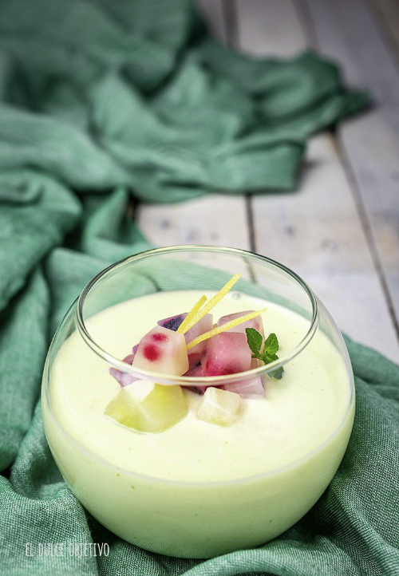

GAZPACHO DE MELON CON GUARNICION DE CITRICOS
Ingredientes para los cubitos de hielo:
- Zumo de limón.
- Frutos rojos (frambuesas, moras, arándanos, grosellas)
- Trocitos de pepino.
Para el gazpacho (Para 2 raciones):
- 500 gr. de melón limpio y sin pepitas.
- 4 hojas de menta o hierbabuena.
- 40 gr. de pepino.
- 40 gr de pimiento verde.
- 50 gr. de cebolleta.
- 100 gr. de yogurt griego natural.
- 20 gr. de aceite de oliva.
- Sal al gusto.
Preparación:
Para los cubitos de hielo:
- Exprimimos limones (o limas si lo preferís), la cantidad va a depender de cuantos hagáis y del tamaño de los mismo, para este caso yo he usado una cubitera del tamaño más pequeño, de los que se usan para hacer mojitos.
- Como los cubitos son muy pequeños, no caben las frutas enteras, por lo que las he troceado en pequeñas porciones y las he ido poniendo en cada agujeritos de la cubitera.
- Rellenamos con el zumo de limón y lo llevamos al congelador, mínimo 6 horas.
Para el gazpacho:
- Pelamos y limpiamos nuestro melón, y lo cortamos en trozos, si tenemos un robot de cocina, tipo Thermomix, lo vamos a ir colocando dentro, si no pues en un recipiente donde después podamos batir.
- Limpiamos y añadimos en trocitos el resto de ingredientes, pepino, pimiento y cebolleta.
- Incluimos el yogurt, las hojas de menta o hierbabuena, el aceite y la sal, aunque al final rectificaremos de sal, por lo que es preferible poner poco para después añadir más si fuese necesario.
- Trituramos bien con el Robot o con una batidora de mano, hasta que no queden grumos.
- Como mi idea es hacer un gazpacho muy ligero, una vez triturado lo he pasado por un colador y lo he llevado al frigorífico para que coja algo de frio.
- Rectificar de sal si es necesario.
- Para servir, pondremos en el recipiente seleccionado nuestro gazpacho y incluiremos cubitos de diferentes frutas y de pepino, para que al derretirse, aporten el toque ácido al mismo.
